Screen gallery — real product UI
معرض الشاشات — واجهة حقيقية من التطبيق
الصور ملتقطة من نسخة الويب الحية. يمكن إعادة تسمية العلامة التجارية لأي عيادة (White-label).
1. Home Dashboard
لوحة التحكم الرئيسية
All roles land here after login. Shows welcome + role, live date/time, quick actions (add patient, find patient, book appointment, today’s count), and today’s appointments with period filters, doctor filter, and search. Performing doctor appears as supervisor / performer when different.
- Quick actions for reception desk
- Today / week / month / year appointment lists
- Filter by supervising doctor
- AR/EN + light/dark from app bar
- Notifications, chat, refresh, logout
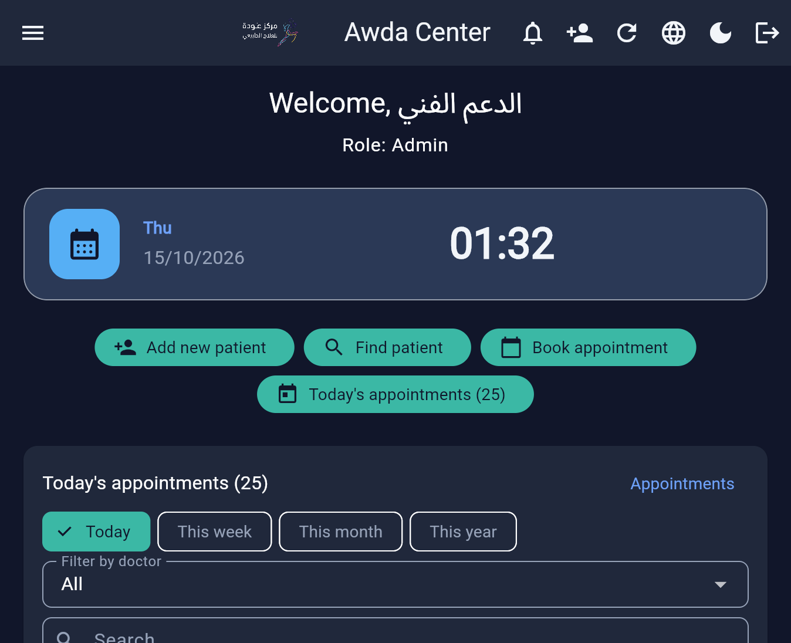
Real screenshot · 02-dashboard.png
2. Admin Dashboard — KPI cards
لوحة المسؤول — مؤشرات
Admin-only command center with live KPIs: total users, active users, today’s and this week’s appointments, patients count, doctors count. Entry point to deeper charts (income, workload, expenses, status breakdowns) and PDF chart export.
- Live clinic KPIs
- Shortcut into rooms / doctors / audit / migration tools
- Period filters for analytics
- Session workload (supervisor vs performer)
- Dynamic multi-chart PDF export
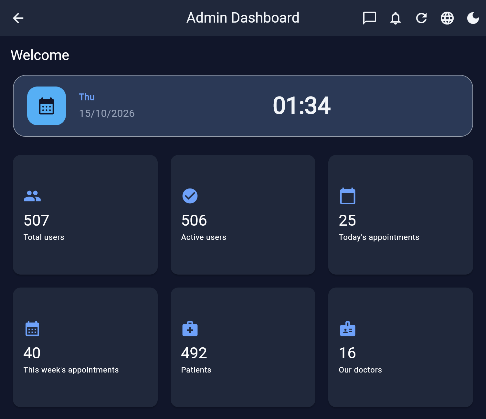
Real screenshot · 03-admin-dashboard.png
3. Appointments — list & filters
المواعيد — قائمة وفلاتر
Core floor screen: status chips (All, Pending, Confirmed, Attended, Apologized, Absent), Day/Month/Year, List vs Schedule, filters for Services, Packages, Doctor, Performing doctor, live session counters, VIP/new-patient legend, searchable list with patient • supervisor / performer.
- Room-aware schedule view available
- Absent / apologized statuses for real clinics
- Performing-doctor filter
- VIP session & new patient stars
- Create/edit from + with full form
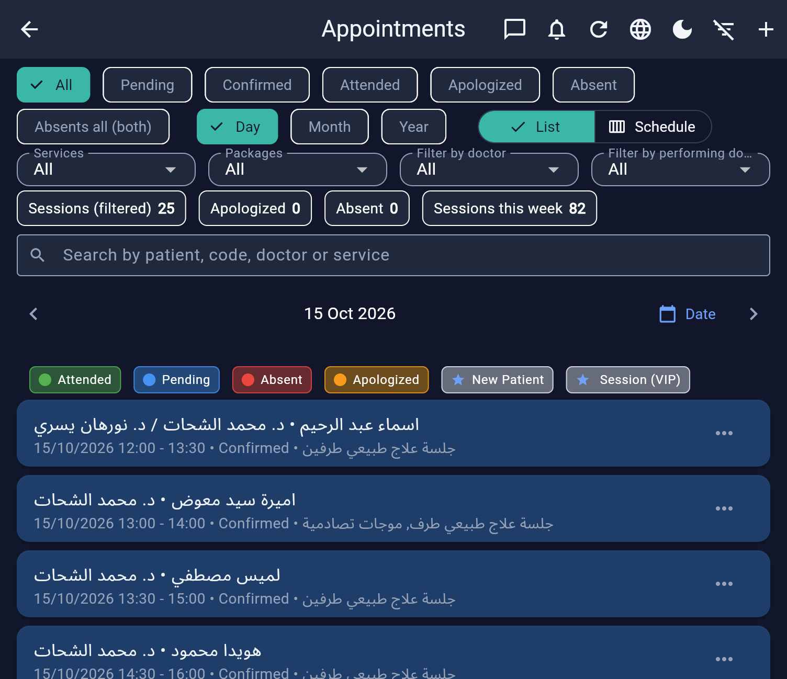
Real screenshot · 04-appointments.png
4. Patients directory
قائمة المرضى
Searchable patient directory (name, email, phone, patient code). FAB to add new patient via secure staff create flow. Opens patient detail with full medical profile, sessions, documents, and PDF report.
- Deep search including patient code
- Staff-created patient accounts
- VIP/starred patients
- Link into medical records & sessions admin
- Works for admin & doctors (by permission)
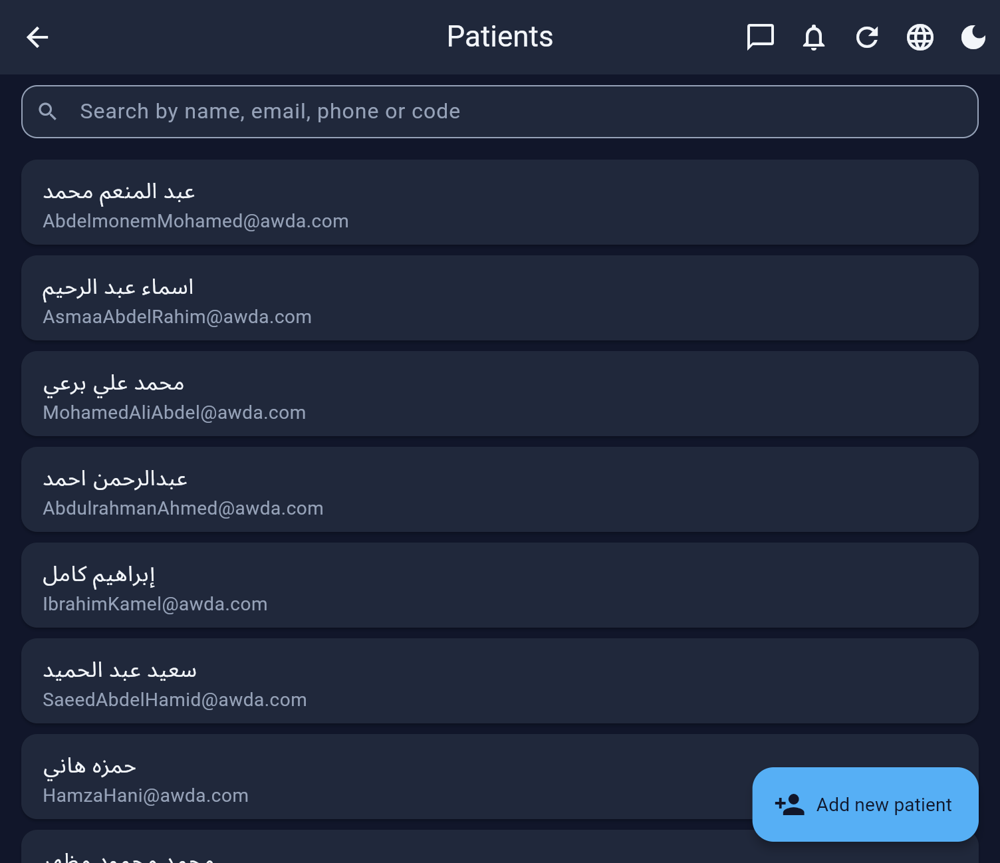
Real screenshot · 05-patients.png
5. Income & Expenses
الدخل والمصروفات
Day/month/year finance ledger with filters (doctor, patient, source, category), income vs expenses toggles, summary cards (total income, net, total expenses), and jump to Finance summary. Default currency EGP.
- Linked to appointments & payment status
- Expense categories: Salary, Rent, Supplies, Media, Other
- Search + period filters
- Add/edit/delete entries
- Maps into owner finance summary
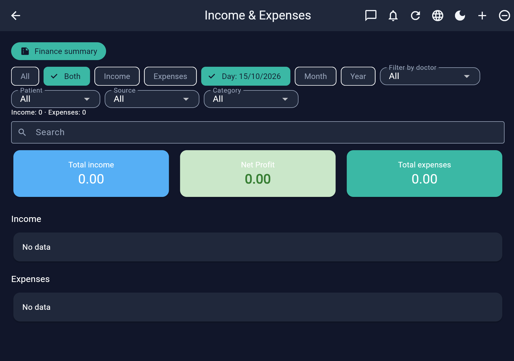
Real screenshot · 06-income-expenses.png
6. Finance summary (clinic P&L)
الملخص المالي
Owner-grade monthly sheet: per-doctor income, 30% target, bonus, commission %, consumables, shared Rent+Guard & Receptionist, MANG / BASKET / profit splits, commission slices table, PDF export & save config.
- Partnership economics (MANG / BASKET)
- Reorder doctor rows
- PDF bilingual export
- Month / quarter / 6m / year views
- Configurable targets & rates
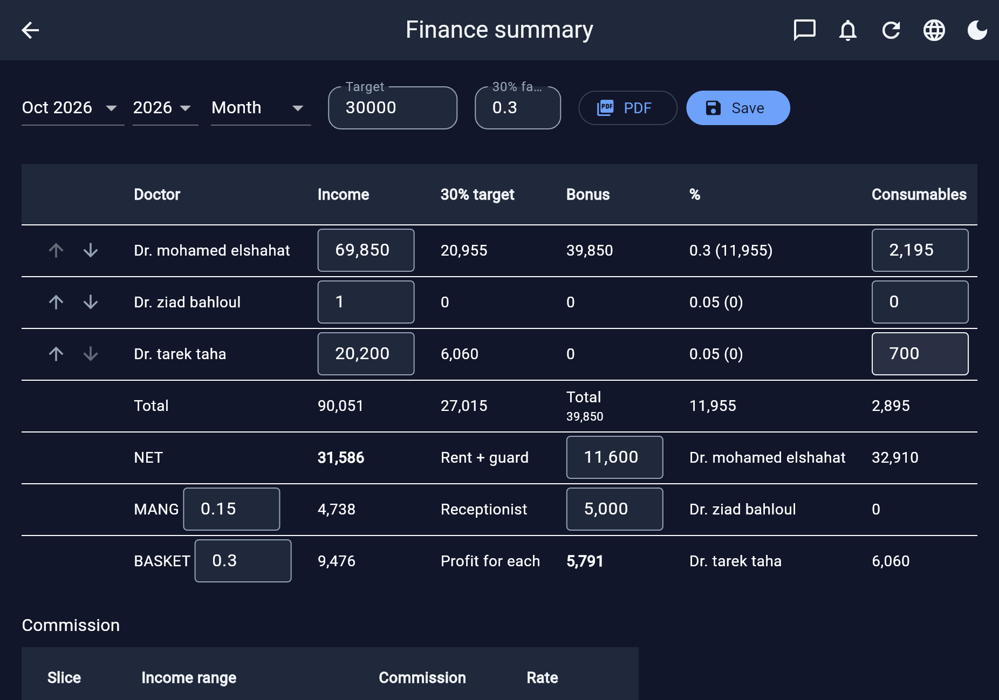
Real screenshot · 07-finance-summary.png
7. Reports hub
مركز التقارير
Tabs: Patients report, Income & expenses, Appointments report, Users summary. Period filters and export to PDF / Excel. Designed for management reviews and audits.
- Colored PDF exports
- Excel/CSV exports
- Role-gated tabs
- Month/day/year filters
- Web download + mobile share
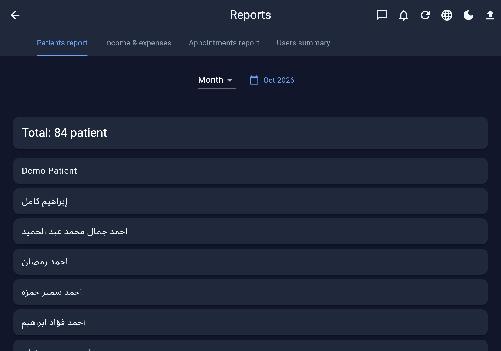
Real screenshot · 08-reports.png
8. Our doctors (public profiles)
أطباؤنا
Expandable doctor directory with specialization, certifications, qualifications, and bio (AR/EN). Visible to all roles including patients for trust and transparency.
- Searchable directory
- Rich credential sections
- Bilingual bio fields
- Patient-facing trust builder
- Linked to doctor user accounts
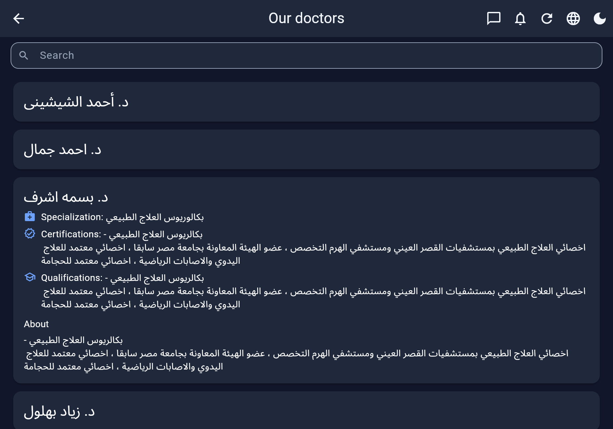
Real screenshot · 09-doctors.png
9. Manage doctors (admin)
إدارة الأطباء
Admin CRUD/link screen for doctor records: list, edit, add. Connects clinic doctor profiles to Auth users for scheduling and billing.
- Add / edit doctor docs
- Email & user linkage
- Feeds schedule & income by doctor
- Admin shortcut from dashboard
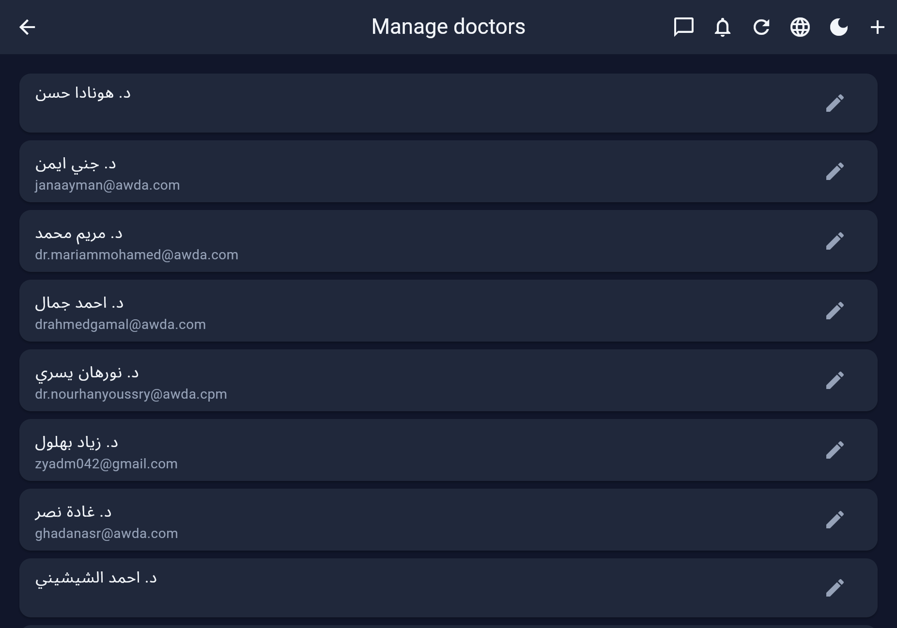
Real screenshot · 19-doctors-admin.png
10. Rooms
الغرف
Facility rooms used as schedule columns and booking constraints (assessment room, session rooms). Active flag, edit/delete.
- Schedule columns
- Overlap prevention in booking
- Active/inactive
- AR room names
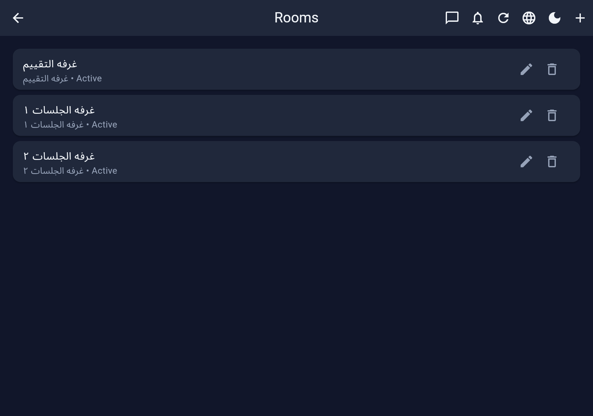
Real screenshot · 10-rooms.png
11. Services catalog
الخدمات
Priced service catalog with AR names, amounts, descriptions, active flag. Used in appointments and price quote.
- EGP amounts
- Rich descriptions
- Active/inactive
- Powers booking multi-select
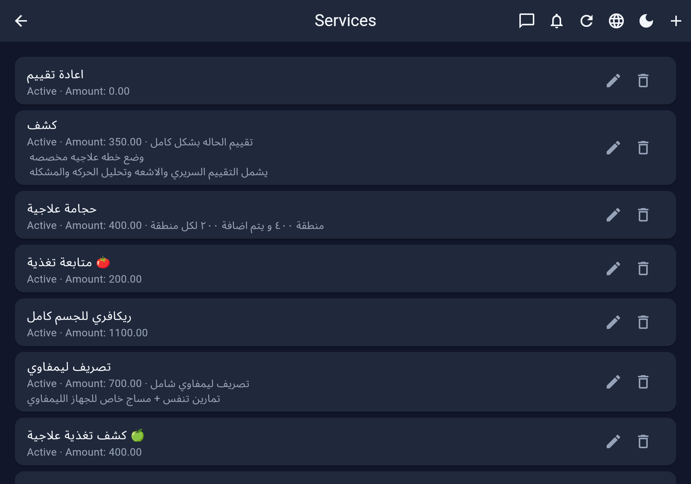
Real screenshot · 11-services.png
12. Packages of sessions
الباقات
Session packages with count, fixed amount, descriptions, installment notes. Linked to appointments for package progress tracking.
- Session counts
- Package pricing
- Link to appointments
- Front-desk selling tool
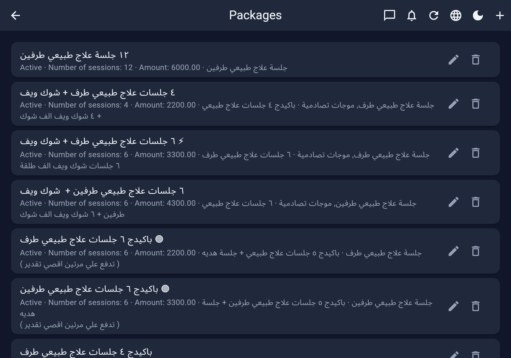
Real screenshot · 12-packages.png
13. Price Quote
عرض الأسعار
Public-style price list of services (and packages) for reception quoting without opening finance screens. Available broadly by role.
- Transparent pricing
- Patient & staff friendly
- Synced with services catalog
- AR/EN ready
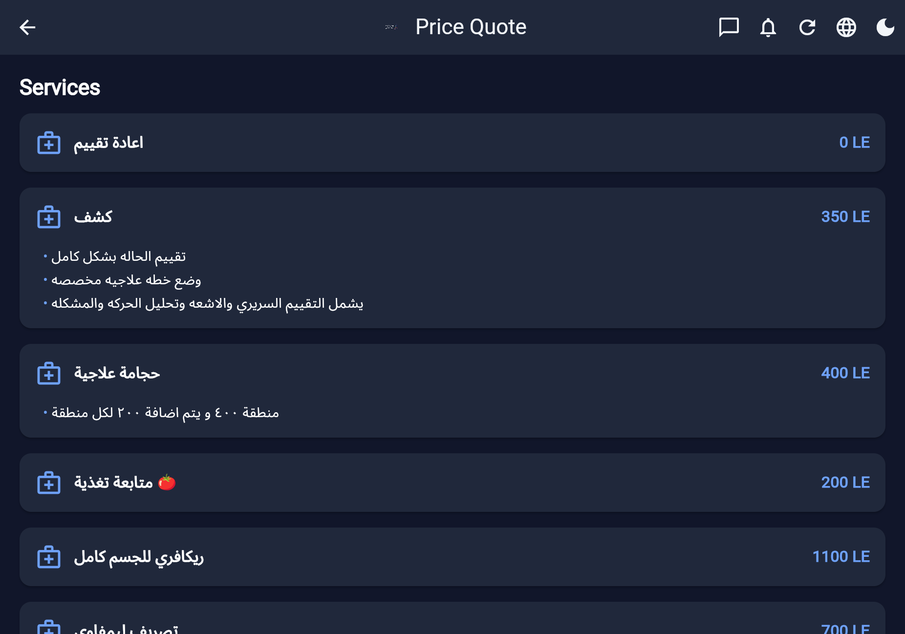
Real screenshot · 13-price-quote.png
14. Users & roles
المستخدمون والأدوار
User directory with role filter, search (name/email/phone/code), invite/add, privileges editing. Roles: admin, supervisor, secretary, doctor, trainee, patient — multi-role + permission overrides.
- Granular privileges
- Enable/disable accounts
- Invite by email
- Patient code search
- Chat permission matrix
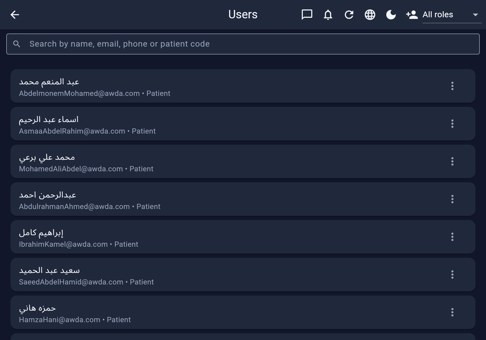
Real screenshot · 14-users.png
15. Audit log
سجل المراجعة
Immutable activity trail: who did what, when, on which platform (Web/Android/iOS) and device type. Search by doctor/patient. Accountability for clinics.
- Platform/device captured
- Appointment & user actions
- Admin/supervisor read
- Exportable via reports
- Create-only integrity
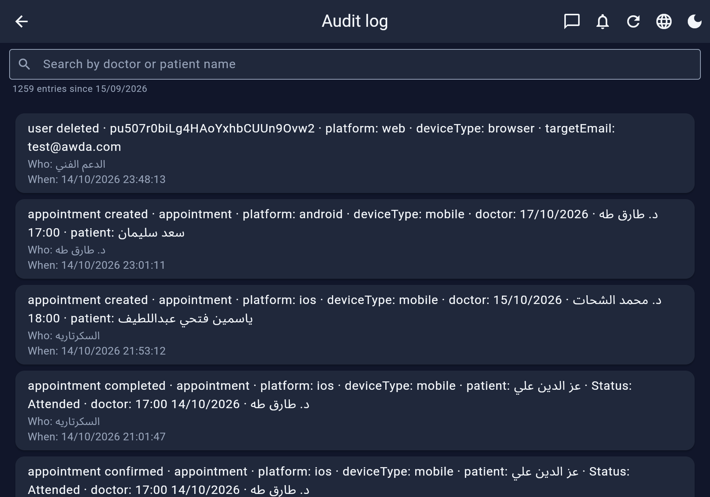
Real screenshot · 15-audit-log.png
16. Clinic Messages
رسائل العيادة
1:1, groups, broadcast. My chats vs All chats (oversight). Media types permissioned. Safety banner: emergencies call clinic; medical notes stay in records.
- Text/image/video/audio/voice/docs
- Groups & broadcast
- Retention + quiet hours
- FCM push
- View-all for managers
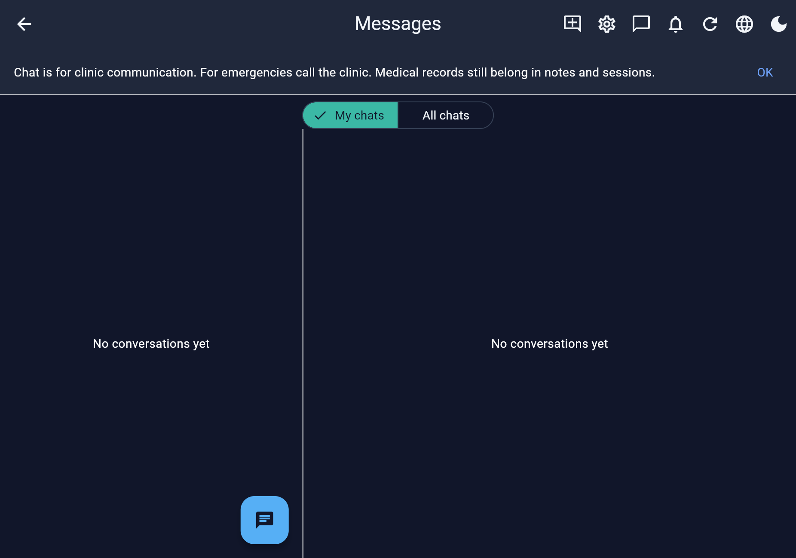
Real screenshot · 16-chat.png
17. Requirements to buy
متطلبات الشراء
Operational shopping / compliance checklist for the center (supplies to buy).
- Admin ops hygiene
- Add items from +
- Keeps floor stocked
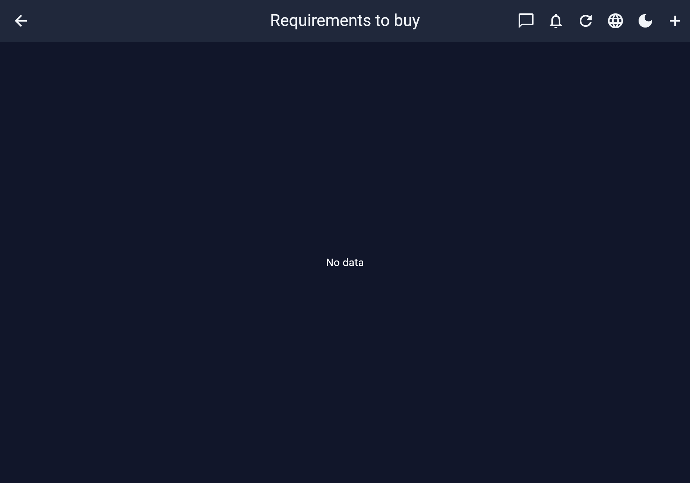
Real screenshot · 17-requirements.png
18. Admin to-do list
مهام الإدارة
Internal admin tasks with reminders (local notifications on mobile).
- Reminders
- Mark complete flows
- Owner productivity
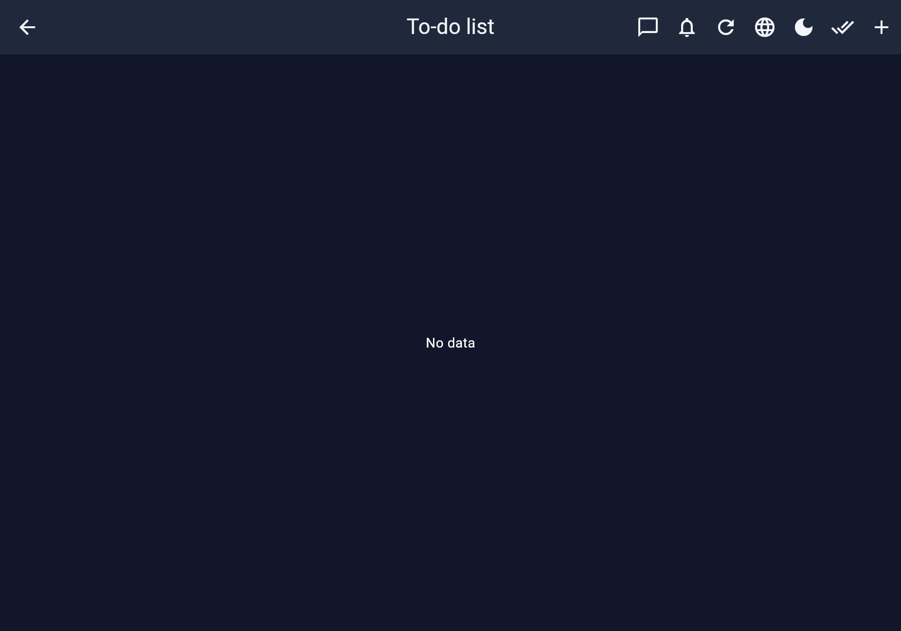
Real screenshot · 18-admin-todos.png